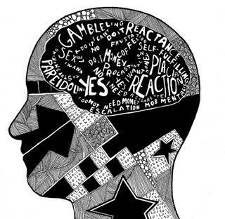

 В настоящее время психология располагает большим арсеналом средств, позволяющих определять устойчивые индивидуально-психологические особенности человека. Традиционно в психодиагностических целях используются такие методы как анкетирование, беседа, тесты, личностные опросники. Вместе с тем существуют определенные ограничения, связанные с применением подобных методов. Это и не очень высокая достоверность результатов, связанная с сознательным контролем своих ответов человека, и долгая процедура обследования, и настороженное отношение испытуемого. Результаты тестов дают, по сути, представление о «ролевой маске» личности, сформированной под влиянием социального опыта и не всегда достоверно отражающей ее суть. Поэтому встает вопрос об использовании новых подходов, которые способны давать объективную информацию о человеке, оперативны по времени и анонимны для тестируемого. Такие возможности предоставляет визуальная психодиагностика, основанная на непосредственном наблюдении и интерпретации внешнего облика человека.
Существуют различные приемы и методики визуальной психодиагностики, позволяющие на основании внешних признаков сделать вывод о внутренних свойствах и качествах личности. В качестве основного объекта визуальной диагностики мы предлагаем рассматривать лицо человека. В условиях повседневного общения лицо человека является самым доступным для наблюдения и наиболее информативным элементом внешности. Кроме того, лицо человека несет в себе наибольшее количество опознавательных признаков, позволяющих сформировать психологический портрет личности, – морфологических (черты лица) и функциональных (выражение лица).
Под моим руководством вы можете изучить методику идентификации личности по признакам внешности (чертам лица). Методика представляет собой визуальное определение предрасположенностей человека (экстраверсии или интроверсии, сенсорики или интуиции, мышления или чувствования, суждения или восприятия), образующих психологический тип человека, по их морфологическим проявлениям (чертам лица). Основу методики составляют полученные в психологическом исследовании данные – выявленные статистически достоверные ассоциации и внешние признаки (черты лица). Освоенная техника определения психологического типа человека позволяет успешно решать многие повседневные и профессиональные задачи.